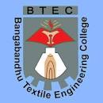

Hello !
Hello !
This is Md Ahashan Habib Kushal
Well, I am coming from Gaibandha district. I am 23 years old .I belong to a nuclear family. I am the youngest member in my family. My strength are, I am self motivated, hard to working person and also a positive thinker. My hobbies are playing football and cricket. Currently I am doing B.Sc in Textile engineering at Bangabandhu textile engineering college ,kalihati, tangail.
Presently my goal is to live honestly and Earn money the honest way by mastering the right skills on freelancing . That's all about me.Thank you.


Hello!
Wellcome to
Bangabandhu Textile Engineering College (BTEC)
Bangabandhu Textile Engineering College (BTEC) is a textile based research college located in Kalihati, Tangail. The college is academically operated by BUTEX and was previously affiliated with University of Dhaka under its faculty of science and engineering for nine years. It is one of the seven textile engineering colleges of Bangladesh which are collectively funded and controlled by the Directorate of Textiles, Ministry of Textiles and Jute.
History :
The institution was established in 2007[1] as the Bangladesh Institute of Textile Technology (BITT) on a temporary campus at Textile Institute, Tangail. The college took its current name in 2010. The foundation stone for a permanent campus at Kalihati was laid in January 2011. Instruction at the permanent campus began in February 2014.
As of 2016, only half of the teaching positions at BTEC had been filled. Laboratory equipment could not be run because of the lack of skilled operators and inadequate quantities of raw materials.
Campus :
BTEC Girls Resident Hall, across bridge over canal
The campus is located approximately 3 kilometres (1.9 mi) southwest of Kalihati, on the north side of the Joydebpur–Jamalpur Highway. The college grounds are split into two unequal parts by a north-south canal connected to the Jhinai River. Most buildings are on the larger, western, portion of the site.
Playing field and six-point courtyard
The entrance gate leads to a courtyard occupied by a covered ring structure in the shape of a hexagon, 20 metres (66 ft) on a side, elevated on a base 0.75 metres (2 ft 6 in) high. Designed by Siraj Tarekul Islam, it commemorates the six point movement, a milestone on the road to Bangladesh's independence. Around the edges of the roof are terracotta panels created by Syed Saiful Kabir Ranju of the Institute of Fine Arts, University of Chittagong. It was built in 2014.